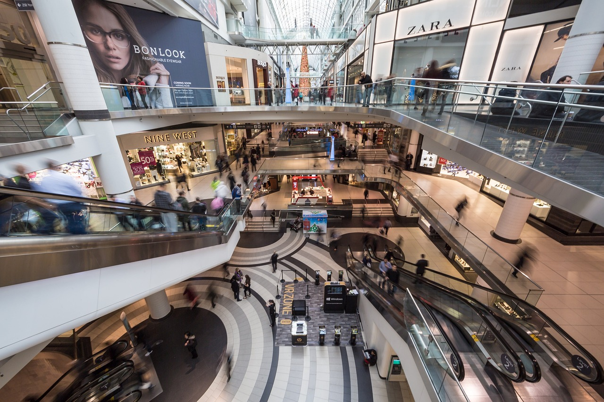

주제 성수동 팝업이 매출을 목표로 하지 않는 이유 (evergreen / brand)
제목 후보
메타 설명 성수동 팝업스토어가 매출 대신 체류시간과 콘텐츠 생산량을 지표로 삼는 구조적 이유를 현장 관찰로 풀었다.
라벨 성수동팝업, 팝업스토어, 브랜드마케팅, 성수동팝업스토어, 체험마케팅, MZ마케팅, 브랜드경험, 팝업스토어이유, 성수동맛집팝업, 오프라인마케팅전략, 브랜드브랜딩, 마케팅KPI
실용 자산 없음 (에세이형) — 브랜드 전략을 다루는 에세이형 주제라 양식·표를 넣으면 분석의 결이 깨진다. 지어낸 매출·수치를 쓰지 않기 위해서도 자산은 생략한다.
발행 전 팩트체크
이미지 (Blogger 편집기에 드래그해 넣으세요)

지난달 성수동에 갔다가 이상한 광경을 봤다. 어떤 브랜드의 팝업스토어 앞에 줄이 백 미터 가까이 늘어서 있었는데, 정작 매장 안으로 들어간 사람 중 손에 쇼핑백을 든 사람은 드물었다. 다들 핸드폰을 들고 벽 앞에서 사진을 찍고, 설치 조형물 사이를 걸어 다니고, 나와서는 친구에게 "여기 꼭 가봐"라고 말하고 있었다. 계산대는 구석에 작게 있었고, 줄은 그 계산대가 아니라 포토존 앞에 서 있었다.
성수동 팝업은 애초에 매출을 목표로 설계되지 않는다. 그 공간이 노리는 건 판매량이 아니라 '얼마나 많은 사람이, 얼마나 오래 머물며, 얼마나 많은 사진을 찍어서 어디로 퍼뜨리느냐'다. 팝업스토어란 짧은 기간 한정된 공간에서 브랜드 경험을 집약적으로 전달하는 임시 매장을 뜻한다. 그런데 요즘 성수동 팝업은 '매장'보다 '전시'에 가까워졌다.
몇 년 전만 해도 팝업스토어는 신제품을 미리 선보이고 즉석에서 판매하는 공간이었다. 백화점 한편에 작은 코너를 내고, 한정판을 풀고, 그날 매출을 집계해서 본사에 보고하는 식이었다. 그런데 지금 성수동을 채운 팝업은 구조 자체가 다르다. 입구는 넓고 화려한데 계산 공간은 구석에 숨어 있다. 어떤 곳은 아예 판매를 하지 않고 체험만 시킨다.
매장 운영 방식을 보면 바로 알 수 있다. 성수동 팝업의 주요 소비층이 '사러 오는 사람'이 아니라 '보러 오는 사람'으로 바뀌었기 때문이다. 20대, 30대 소비자는 그 공간에서 물건을 사기보다 콘텐츠를 만들어 간다. 그리고 그 콘텐츠가 다시 또 다른 방문객을 끌어온다. 매출이 아니라 노출이 매출보다 먼저 와야 하는 구조가 된 것이다.
실제로 입구에 상주하는 스태프의 역할도 달라졌다. 예전 행사 부스의 스태프는 "이거 한번 써보세요"라며 제품을 권했다면, 요즘 성수동 팝업의 스태프는 "여기서 찍으시면 더 예뻐요"라며 동선과 각도를 안내한다. 판매를 돕는 직원이 아니라 촬영을 돕는 직원에 가깝다. 역할 자체가 매출이 아니라 콘텐츠 생산을 중심으로 재편된 셈이다.
그날 줄 뒤쪽에서 두 사람의 대화를 들었다. "여기 뭐 파는 데야?"라고 묻자 옆 사람이 "몰라, 그냥 사진 찍으러 왔어"라고 답했다. 줄을 선 이유가 상품이 아니라 그 공간에 '다녀왔다는 증거'를 남기기 위해서였다. 입장을 위해 번호표를 받고, 입장한 뒤에는 정해진 동선을 따라 걷고, 사진을 찍을 수 있는 지점마다 다시 줄을 선다. 매장이라기보다 하나의 코스로 설계된 체험관에 가까웠다.
흥미로운 건 이 과정에서 브랜드 로고가 노출되는 빈도다. 포토존 하나하나에 제품이나 로고가 자연스럽게 배치돼 있어서, 사진을 찍는 행위 자체가 광고 소재를 만드는 행위가 된다. 방문객은 돈을 내지 않고 콘텐츠를 만들어주고, 브랜드는 그 콘텐츠의 확산을 지켜보기만 하면 된다. 가장 비용 효율이 좋은 광고판을 사람들이 스스로 들고 다니는 셈이다.
그럼 브랜드는 무엇을 보고 이 팝업의 성공과 실패를 판단할까. 현장에서 들은 이야기를 정리하면 대체로 이렇다.
이 지표들의 공통점은 전부 '돈을 안 써도 측정된다'는 것이다. 매출은 그 다음, 혹은 아예 다음 분기 본매장 판매량으로 넘어간다. 팝업에서 손해를 보더라도 그 손해가 본매장과 온라인몰 매출로 전환되면 성공이라고 판단하는 식이다.
성수동 팝업이 매출을 포기하는 이유는 온라인 광고의 효율이 떨어졌기 때문이다. 배너 광고, 피드 광고는 이제 사람들이 거의 안 본다. 광고라는 걸 인지하는 순간 스크롤이 빨라진다. 그런데 팝업은 다르다. 사람이 직접 공간에 들어가 손으로 만지고 사진을 찍는 행위 자체가 광고가 된다. 그것도 누가 시킨 광고가 아니라 본인이 자발적으로 올리는 콘텐츠라서 신뢰도가 훨씬 높다.
19세기 세계박람회의 국가관을 떠올리면 이해가 빠르다. 영국이 1851년 수정궁 박람회에서 자국의 산업력을 전시했을 때, 그 자리에서 물건을 팔려던 게 아니었다. "우리가 이런 나라다"를 보여주는 게 목적이었다. 성수동 팝업도 비슷하다. 그 공간에서 지갑을 열게 하려는 게 아니라 "우리 브랜드는 이런 세계관을 가졌다"를 보여주고, 그 인상을 들고 나가 각자의 SNS에 퍼뜨리게 만드는 전시관에 가깝다.
백화점 지하 식품관 옆에 서는 행사 부스와 성수동 팝업을 같은 선상에 놓으면 헷갈리기 쉽다. 둘 다 '임시 매장'이라는 형태는 같지만 목적이 다르다. 백화점 행사 부스는 그 자리에서 결제가 일어나야 성공이고, 담당자는 당일 매출을 바로 보고한다. 반면 성수동 팝업은 결제 여부와 상관없이 그 공간을 다녀간 사람의 수와 그 사람이 남긴 흔적으로 성패를 가른다.
이 차이는 공간 설계에도 그대로 드러난다. 백화점 행사장은 상품 진열대가 중심이고 동선이 짧다. 반면 성수동 팝업은 조형물, 조명, 음악까지 계산된 하나의 세트장이다. 들어가서 나오기까지 걸리는 시간 자체를 늘리려는 설계다. 똑같이 '임시로 차린 공간'이라도 하나는 매대이고 하나는 무대다.
팝업은 보통 2주에서 한 달 사이에 문을 닫는다. 폐점 당일 철거 트럭이 들어오고, 며칠 전까지 줄이 늘어섰던 자리는 거짓말처럼 텅 빈 공터로 돌아간다. 그런데 브랜드 입장에서 그 공간이 사라졌다고 끝난 게 아니다. 방문객이 남긴 사진과 영상은 그 뒤로도 몇 달간 알고리즘을 타고 떠돈다. 팝업이 열려 있던 기간보다 콘텐츠가 소비되는 기간이 훨씬 길다는 뜻이다.
그래서 요즘 팝업 기획서에는 '철거 이후 플랜'이 따로 들어간다고 한다. 현장에서 수집한 사진과 영상을 브랜드 공식 계정에 재가공해서 올리고, 체험 과정에서 받은 연락처로 다음 신제품 소식을 보낸다. 공간은 사라져도 그 공간이 만든 데이터와 콘텐츠는 다음 캠페인의 재료로 다시 쓰인다. 팝업이란 결국 한 번 쓰고 버리는 무대가 아니라, 다음 전시를 위한 자료를 모으는 과정에 가깝다.
왜 하필 성수동이냐고 묻는다면, 답은 단순하다. 그곳에 이미 '보러 오는 사람들'이 모여 있기 때문이다. 과거 성수동은 수제화 공장과 인쇄소가 밀집한 공업지역이었다. 낡은 벽돌 건물이 남아 있던 이 동네가 몇 년 사이 전시와 사진 찍기 좋은 배경으로 재발견됐다. 브랜드 입장에서는 임대료를 감수하고서라도 이미 사람이 몰리는 거리에 자리를 잡는 게, 새로운 상권을 개척하는 것보다 훨씬 빠르고 확실하다.
성수동 팝업의 임대료가 서울 시내에서도 높은 축에 속한다고 업계에서는 알려져 있다. 그런데도 브랜드들이 줄을 서서 들어가는 건, 그 비용을 '매출로 회수할 비용'이 아니라 '노출로 회수할 비용'으로 계산하기 때문이다. 손익계산서의 어느 줄에 적히느냐가 다를 뿐, 투자라는 사실은 같다.
이 구조를 회의실로 가져와 보면 흥미로운 지점이 생긴다. 우리가 보고서에 쓰는 KPI도 늘 매출, 전환율, 판매량처럼 '돈으로 바로 연결되는 숫자'에 갇혀 있다. 그런데 성수동 팝업을 기획하는 쪽은 그 틀을 먼저 깨고 "이 활동이 측정하려는 진짜 목표가 뭔가"를 다시 질문했다. 체류 시간, 콘텐츠 생산량, 회자되는 정도. 당장 돈이 안 되는 지표를 정면으로 세운 것이다.
회사에서 신사업이나 브랜딩 프로젝트를 할 때 가장 많이 듣는 질문이 "그래서 매출이 얼마나 나오느냐"다. 틀린 질문은 아니지만, 모든 활동이 같은 자로 재어지는 건 아니다. 어떤 프로젝트는 매출이 아니라 인지도를, 어떤 프로젝트는 신규 고객 유입 경로 자체를 만드는 게 목표일 수 있다. 성수동 팝업을 기획한 사람들은 그 구분을 명확히 하고 보고서 첫 줄에 "이 프로젝트의 KPI는 매출이 아니다"라고 적었을 것이다. 그 한 줄을 설득해내는 게 실제로는 가장 어려운 일이다.
예전 회의실에서 비슷한 장면을 본 적이 있다. 어떤 팀이 매출로 환산되지 않는 캠페인을 기획해 왔을 때, 임원 한 명이 "그래서 숫자로 뭘 보여줄 거냐"고 물었다. 그 팀이 꺼낸 건 매출표가 아니라 체류 시간과 재방문 의향 설문 결과였다. 처음엔 다들 떨떠름한 표정이었지만, 그 지표가 다음 분기 실제 판매로 이어지는 걸 확인하고 나서야 회의실 분위기가 바뀌었다. 당장 눈에 보이는 숫자가 아니라고 해서 의미 없는 숫자는 아니라는 걸, 그 자리에서 배웠다.
다만 현장에서 줄을 서 있던 사람들, 그리고 그 뒤에서 조용히 문을 닫는 작은 매장들을 번갈아 보면 마음이 복잡해지는 것도 사실이다. 화려한 전시 뒤에서 임대료를 감당 못 해 사라지는 동네 가게들이 같은 거리에 섞여 있다. 브랜드에게는 영리한 전략이지만, 그 동네 자체에는 다른 질문을 남긴다. 체험과 노출을 위한 무대가 된 거리가, 정작 그곳에 살던 사람들에게는 어떤 의미인지는 별개의 문제다. 씁쓸하면서도 꽤 인상적인 풍경이다.
Q. 성수동 팝업에 가서 사진만 찍고 그냥 나온 적, 저만 있는 건 아니죠?